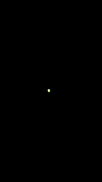
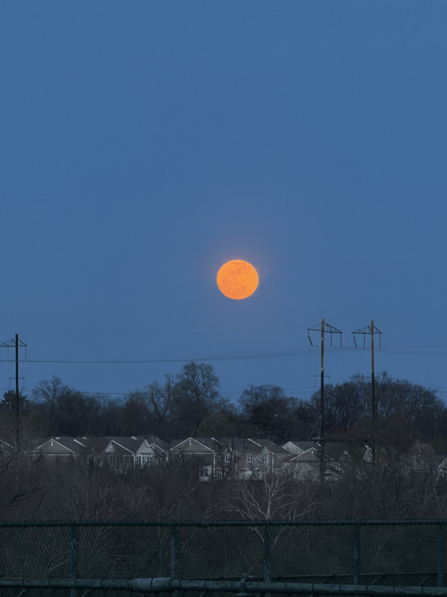
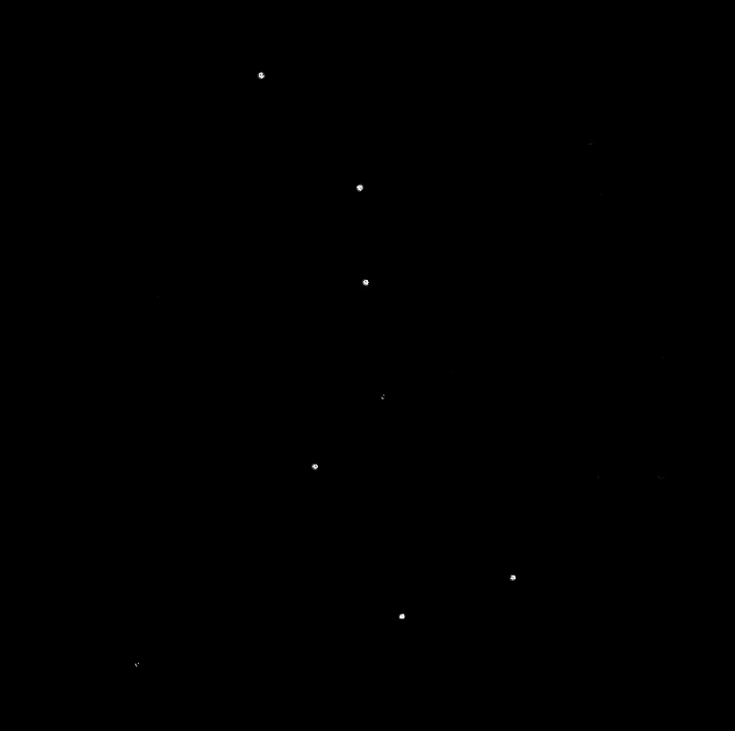
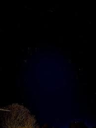
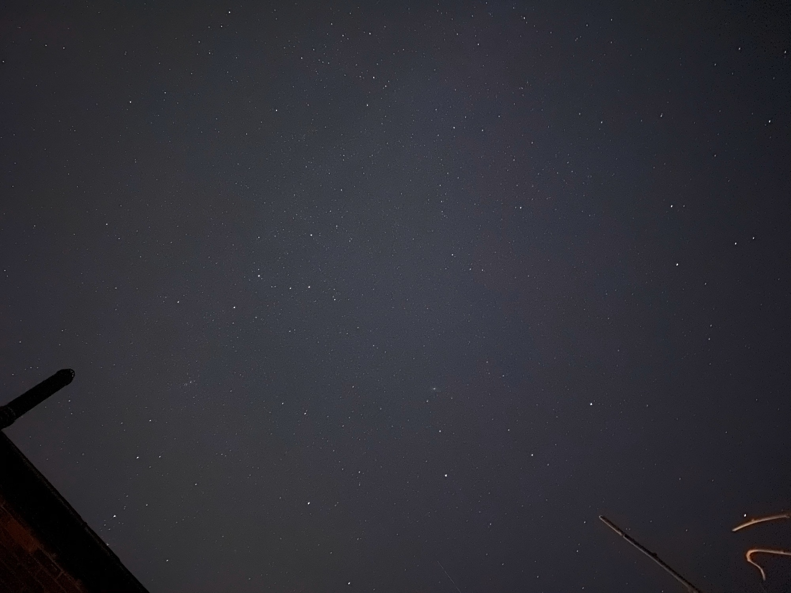
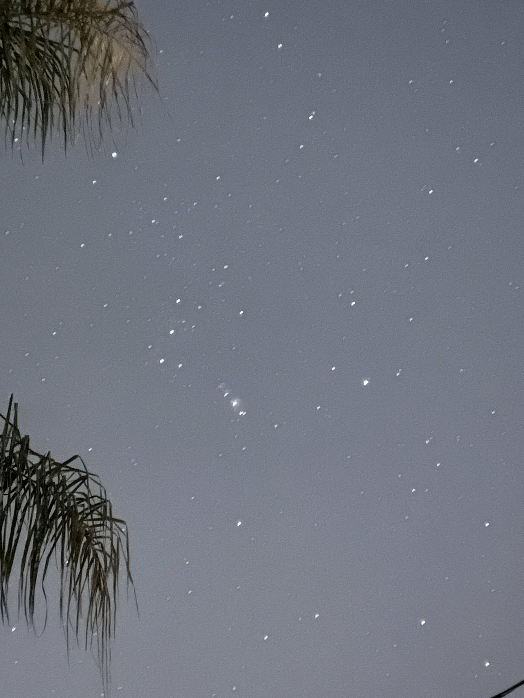

Interactive Sky Map
Map Legend
Moon
Planet
Constellation
Mars

Red planet visible to the naked eye from Earth.
Best viewing: Late evening to night
Visibility rating:
Venus

Venus is the brightest planet visible from Earth and is often called the “Morning Star” or “Evening Star” depending on when it appears in the sky.
Best viewing: Sunrise or sunset (low on the horizon)
Visibility rating:
Moon

Earth’s only natural satellite and the brightest object in the night sky.
Best viewing: Any clear night
Visibility rating:
Big Dipper

A famous asterism used to locate the North Star.
Best viewing: Spring
Visibility:
Gemini

Represents the twins Castor and Pollux.
Best viewing: Winter
Visibility:
Cassiopeia

A distinctive W-shaped constellation visible year-round.
Best viewing: Fall
Visibility:
Orion

One of the easiest constellations to recognize, featuring Orion’s Belt.
Best viewing: Winter
Visibility:
Rating Legend
= Visibility level (more stars = easier to see)
Image Credits
Map background: “Stars in the sky during night time,” Pexels, https://www.pexels.com/photo/stars-in-the-sky-during-night-time-7665098/
Mars image: Yahoo News, “Trippy timelapse shows Curiosity’s mission on Mars,” https://finance.yahoo.com/news/trippy-timelapse-curiositys-mission-mars-212728835.html
Venus image: Smartphone Astrophotography Facebook Group, https://www.facebook.com/groups/smartphoneastro/posts/733235135935878/